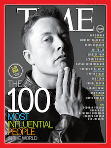

Awards

Elon Musk has received numerous awards over the course of his career. Some of the most note-worthy ones are the following:
- In 2006, Musk served as a member of the United States National Academy of Sciences Aeronautics and Space Engineering Board.
- R&D Magazine Innovator of the Year for 2007 for SpaceX, Tesla and SolarCity.
- Inc Magazine Entrepreneur of the Year award for 2007 for his work on Tesla and SpaceX
- American Institute of Aeronautics and Astronautics George Low award for the most outstanding contribution in the field of space transportation in 2007/2008. Musk was recognized for his design of the Falcon 1, the first privately developed liquid-fuel rocket to reach orbit.
- Listed as one of Time's 100 people who most affected the world in 2010.
- The world governing body for aerospace records, Fédération Aéronautique Internationale, presented Musk in 2010 with the highest award in air and space, the FAI Gold Space Medal, for designing the first privately developed rocket to reach orbit. Prior recipients include Neil Armstrong, Burt Rutan of Scaled Composites and John Glenn.
- Named as one of the 75 most influential people of the 21st century by Esquire magazine.
- In February 2011, Forbes listed Musk as one of "America's 20 Most Powerful CEOs 40 And Under".
- In 2012, Musk was awarded with the Royal Aeronautical Society's highest award: a Gold Medal.
- In 2013, Musk was named the Fortune Businessperson of the year for SpaceX, SolarCity, and Tesla Motors.
- In 2015 he was awarded IEEE Honorary Membership.
- As of 2015, Musk serves on the board of advisors of Social Concepts, Inc.
- In 2016, The Drive, a division of Time, named Musk the most influential person in the car business and as the second most influential person in the automotive tech sector.
Honorary doctorates
He is also a Honorary doctorate from the following academic institutes:
- Honorary doctorate in Design from the Art Center College of Design
- Honorary doctorate (DUniv) in Aerospace Engineering from the University of Surrey
- Honorary doctorate of Engineering and Technology from Yale University